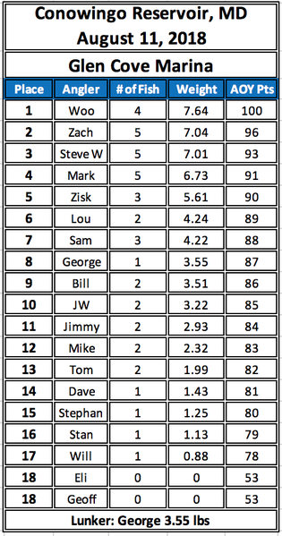
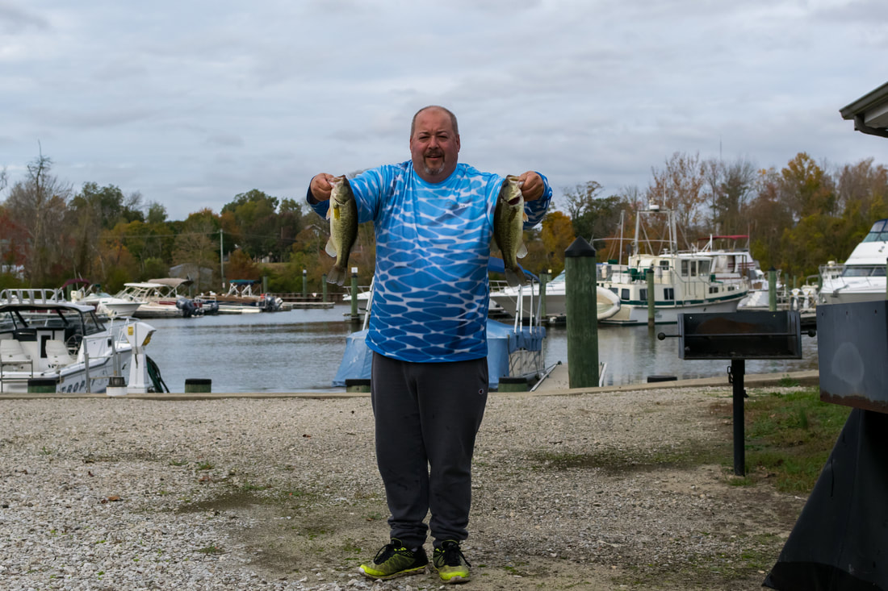
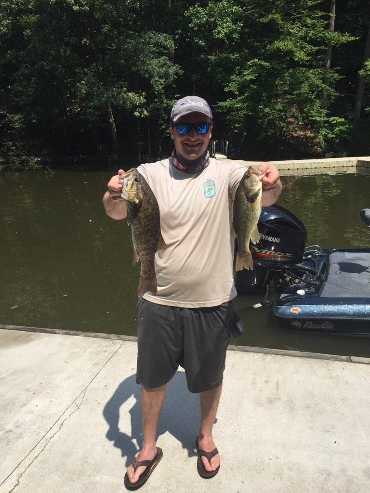
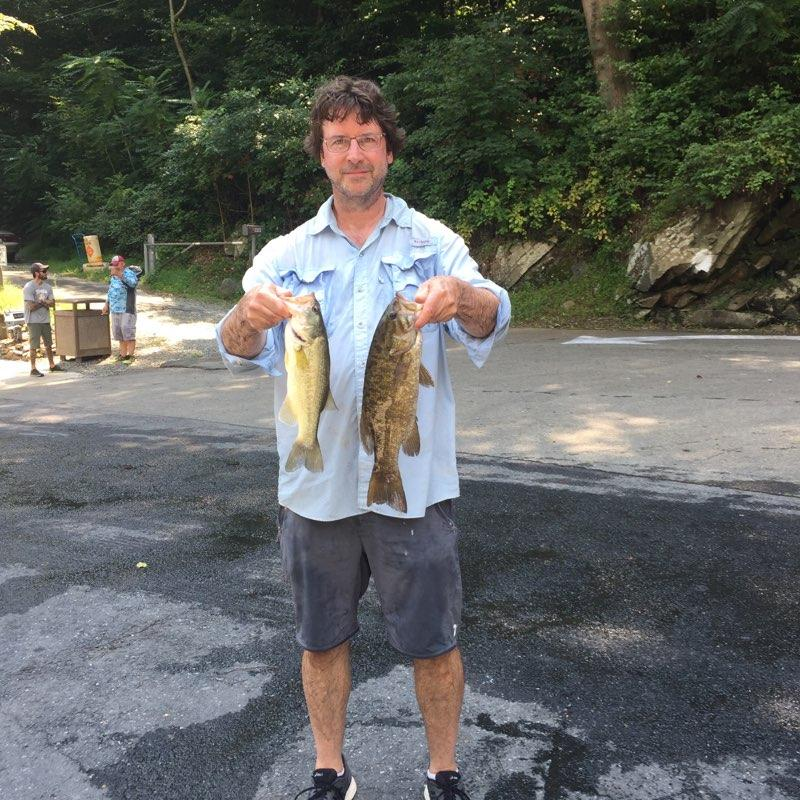
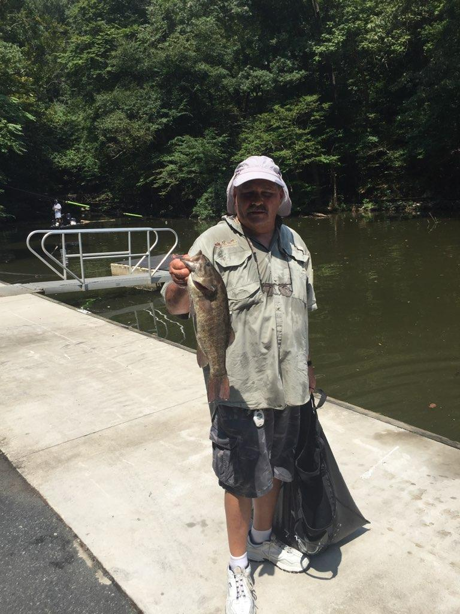
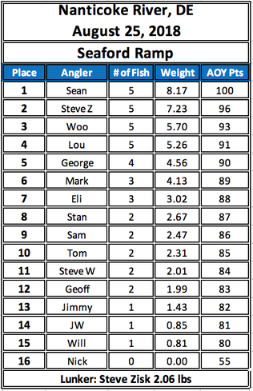
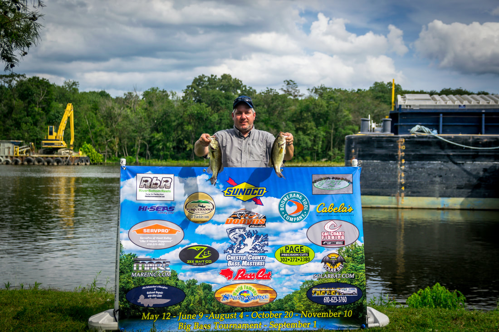
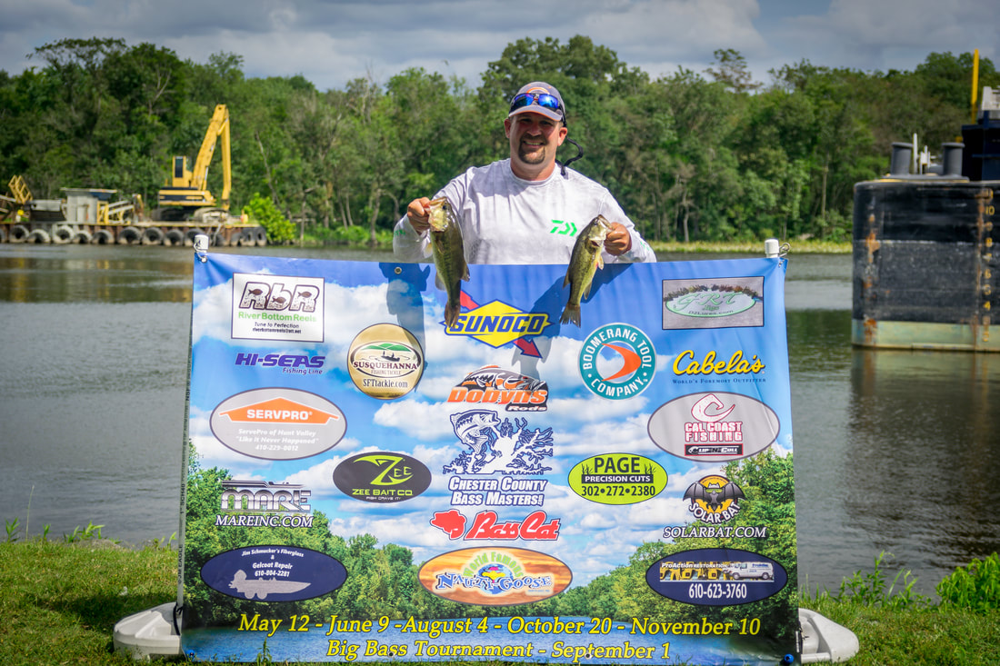
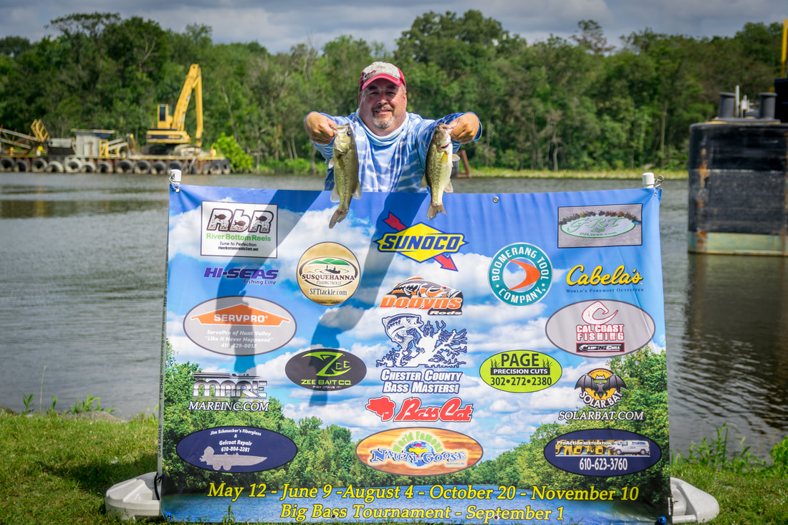

The results of this season are pictures of the tables on the old club site. They are shown as they are, in the order of the old page; pick a picture to open it full size.
2018 CCBM Tournament Results and Standings


CCBM Tournament #1
April 21, 2018
Nanticoke River

To open the season we start with a record bag for one angler, another good day for an angler who once questioned the quality of the Nanticoke River bass, and another angler avoids the new boat curse.

Sam Montalto takes his first win with the club and cashes in!!
He not only gets the win but he also catches the largest bag on the Nanticoke ever weighed in by a CCBM angler in a club tx.
Sam also takes the lunker award by weighing in a 3.36 lb Largemouth which anchored his record bag of 12.59 lbs.

After several years of mediocre fishing and cookie cutter small fish being weighed in. George Waeckel is enjoying the turn around of the Nanticoke fishery.
Over the last few years we are finding the average fish weight to be going up along with the numbers of fish being caught. On this day George was catching them and enjoying putting up some 2nd place points early in the AOY race.
George's limit goes 9.85 lbs which included a couple solid fish

Sean Geerlof has been hearing ever since ordering his new boat to expect the "New Boat Curse" to come with it.
Thankfully for Sean there was no sign of the Curse in the opening 2018 tx. Sean's fish with 10 mins to go helped slip him into 3rd place just past Tom Yaw who was having a great day.
Sean's limit went 9.71 lbs, which was anchored by a 3.05 Largemouth.
CCBM Tournament #2
May 5, 2018
Sassafras River

On our first trip to the Sassafras River in a decade, CCBM anglers have a strong day.
3 of the last 4 AOY winners fill the top 3 on a early spring day.

Pictured on the left Lou Croce gets a little help holding up his winning bag by fellow CCBM's.
Louie takes the win with the help of 2 big fish each weighing around 4.46 lbs. His bag of 5 fish goes 17.43 lbs and is a new record for largest bag weighed in on the Sassafras in a club tx.

After taking a 3rd place finish in the club's opening tx, Sean Geerlof does one better by taking a 2nd place finish on this day.
Sean weighs in the day's lunker that goes for 5.38 lbs. 2nd place points are enough to move him into the AOY lead early with a lot of fishing left to go.

Mark Ely weighs in a bag of 3 fish that goes 9.04 lbs. Mark had the right average weight but could not get 2 more bites.
Mark takes 3rd place and is looking to defend his AOY title.
CCBM Tournament #3
May 26, 2018
North East River

Our first club tournament on the North East River for 2018 was one for the record books with 2 anglers weighing in 2 of the biggest bags in CCBM history!!!
We also have an angler weighing in a top 5 bass ever in club history!!
CCBM AOY having a consistent year with 2 top 3 finishes in a row.

The 2012 AOY Stan Horne shows us how it is done in a spring time North East River Tx!!
After having a extremely slow morning while watching everyone around him catching fish Stan makes a move that will prove to be one for the record books! Just about every spot he ran to produced BIG fish and by 2pm put himself in contention for the win and a record bag.
No club tx in CCBM history ever took a 20 lb bag to win but on this day if you had a 20 lb bag you would finish in 3rd. Stan gets all the right bites and got them in the boat which produces a big win and a lead in the AOY race!
Stan's bag goes 21.49 lbs beating out another 20 lb bag.

After having a strong day on the water and thinking he had enough weight to bring home the win, Lou Croce hears of the leading bag at the weigh-in scales.
Thinking he had an 18 or MAYBE a 19 lb bag Louie was thrilled to know that even though he did not win, he takes 2nd place and the 2nd best bag in club history.
Lou's bag weighs in at 20.08 lbs anchored by a 5.23 lb Slob!

Mark Ely makes it 2 in a row with another 3rd place finish in his quest to become only the 2nd angler to repeat as AOY.
Mark's bag goes 16.94 lbs which on a normal day would compete for the best of the day but two 20 lb bags are tough to beat. He gets the next best thing which is 3rd place points.
Mark's bag weighs in at 16. 94 lbs.

Jerry Gerlach fishing as a rider due to boat issues shows us how it is done from the back of the boat!!
Jerry weighs in the clubs 4th largest Bass in club history!! This TOAD makes it to the scales weighing 6.55 lbs which easily takes the Lunker award for the day!
Secondly we would like to recommend Jerry visit Mare INC in Thurmond MD who is a Bass Cat dealer to help resolve his boat issues and put him back behind the wheel!
CCBM Tournament #4
June 30, 2018
North East River

During this tx it seemed like the fish and the anglers were affected by the high temps with the air temps reaching 95+ degrees.
One boat was able to find the biting larger fish with both first and second coming from the same boat.
One angler makes it 3 out of 4 finishes in the top 3 so far while another angler finds some big fish late in the day to claim Lunker honors.

2017's AOY finds his way into the winners circle after back to back 3rd place finishes in his other 2 tournaments.
Mark Ely brings in a big bag while most were looking for some shade. Mark's limit of Largemouth weigh in at 16.42 lbs and take the win by beating the closest angler who just so happens to be his rider.

In his 3rd year in the CCBM Ryan Sweeney takes his first top 3 finish!! With this 2nd place finish we know Ryan will be even more hungry for the next one.
Ryan's limit goes 13.90 lbs, just one big fish out of the win.

Lou Croce makes it 3 in a row this year for top 3 finishes and moves himself into 3rd in the AOY race.
Lou's limit of Bass weigh in at 12.55 lbs just squeaking past the closest angler in the field.
Lou is looking forward to the next tx which is also on the North East River on July 14th!!

Stan Horne, who missed out on lunker in the last tx, takes it this time around.
I am sure he would much rather take the win but on a tough day taking home Lunker honors is still worth the day in the heat. His 4.90 lb Largemouth is a great fish to have in your bag come time for weigh in.
CCBM Tournament #5
July 14, 2018
North East River


CCBM Tournament #6
July 21, 2018
Nanticoke River


CCBM Tournament #7
August 11, 2018
Conowingo Reservoir


















CCBM Tournament #8
July 21, 2018
Nanticoke River
On one of very few nice days we have had this season a 2-time AOY is making a big push to make it his 3rd.
Another angler who entered just his 2nd year as a boater takes the runner-up spot and another rider who turned boater is making sure the anglers know he is on the rise.

Sean Geerlof is making a big push for 2018 AOY.
He ended up with bites all day but had a hard time finding a kicker. Thankfully for him the fish he was catching were a little better than the cookie cutter 12-13" bass.
He weighs in a bag that comes in at 8.17 lbs and more importantly takes home 1st place points.

Steve Zisk came in with a tx win from 2017 and finished the day with his 2nd top 3 finish.
Steve, who started out as a rider years ago, jumped into a nice Bass Cat that was owned by a previous CCBM member and is improving every tx.
Steve's bag comes in at a respectable 7.23 lbs which included the day's lunker that weighed 2.06 lbs.
Steve takes home 2nd place points for his day's work.

James "Woo" Hauck has a strong day on the river and takes home 3rd place. James fished as a rider in the beginning of the year due to boat issues but is now taking advantage of his time behind the driver's seat.
For the 2nd time this year he takes a top 3. Today's bag weighs in at 5.70 lbs and he is looking forward to the next tx on the North East River.

CCBM Tournament #9
September 8, 2018
North East River
Chester County Bass Masters get a treat as one of its long time riders celebrates his first win in the club.
Another angler's dream season picks up steam while our Tournament Director keeps the family name in the top 3 for the 4th tx in a row.

JW Wade was the talk of the weigh-in when it leaked out that he had a limit of bass on a tough day. He was just saying the tx before that he had not weighed in a limit and was looking forward to when he did.
On this day he did not just win his first tx, weigh in his first limit, catch Lunker of the day, but also weighed in the 2nd largest bag ever weighed in by a rider in the history of the club.
JW's bag weighs in at 16.20 lbs and his Lunker goes for 4.53 lbs which BARELY noses out his boater for the day by 1 hundredths of a pound for Lunker.
Congrats JW and looking forward to even more success.

Sam Montalto adds a 3rd top 3 finish this year which has moved him into 3rd place in AOY standings. He is just a win out of 1st place in the AOY race with just 3 txs left.
His bag of 4 fish weigh in at 10.90 lbs and gives him a 2nd place finish and he is looking for a strong finish to the season.

Another tx, another Weimar top 3 finish. This time it is Steve Weimar. A solid day on the water leads to some important top 3 points with 3 txs left.
Steve has moved himself into 5th place overall with plenty of upgrade room. Steve's limit weighs in at 8.26 lbs for 3rd place.
CCBM Tournament #10
September 22, 2018
Nanticoke River

After a week long discussion on what to do about a unstable Conowingo that was feared to be loaded with dangerous debris and very high current it was decided by the club officers to relocate the tournament to the Nanticoke River for the safety of the club members .
Weimars make it 5 in a row in the top 3, while ex AOY takes the lead in this year's AOY race and another former AOY Champ finishes strong to keep himself in the hunt for this season's AOY.

Steve Weimar is on the move up the AOY leader board!! Steve is now in 3rd place overall and looking to keep moving up the standings with 2 txs left in the season.
Steve has had a top 3 finish in 3 of the last 4 txs! He is getting hot at the right time of the year. Steve takes the win and Lunker honors with a bag that goes 8.70 lbs and a kicker that weighs in at 3.42 lbs!

Sean Geerlof squeezes a 2nd place finish by beating out 3rd place by only .05 lbs. Sean is now in sole custody of AOY with this 2nd place finish.
Sean caught plenty of fish but had a hard time upgrading due to catching lots of cookie cutter size fish. His bag goes 8.14 lbs and is looking forward to the next tx to try to keep himself in the leader seat.

When the launch starts for a CCBM tx you always need to worry about Stan Horne and today was no different. After a slow start Stan loads the boat with plenty of fish but had the same issue Sean had with catching similar size fish.
With a 3rd place finish Stan puts himself in position to make a run at AOY. Stan's bag comes in just shy of 2nd place at 8.09 lbs.

CCBM Tournament #12
CCBM Classic
November 3, 2018-Nanticoke River
November 4, 2018- North East River

With the last tx of the year here we had the AOY figured out but everything else was up in the air like Rider of the Year and the finishing order of the top 6.
We had a lot of movement in the final results after day one was in the books. This is precisely why we have a split classic. No matter how day one goes, you are always in it if you fish on day 2.
One angler wins by more than 3 lbs but 2nd through 5th was decided by less than 1.5 lbs!

Up until tx number 11 Lou was battling with Sean Geerlof for angler of the year. Unfortunately he fell short but came back in a big way by winning the club 2-day Classic that ends our season every year.
After ending day one in 5th place he roars back to win the tx with a total bag that weighed 19 lbs even.
Louie finishes the year in 2nd place overall and weighs in only the 2nd ever 20+ lb bag in the history of the club.

After starting day 2 in 7th place Stan Horne knew he would have to go out and fish for that big bite and he found it. His bag that weighed in at 15.72 lbs included the tx lunker. 4.67 lbs and was enough to push him past a group of anglers that were surging up the day 2 leaderboard.
Stan finished the year in 3rd place overall while weighing in the club's largest bag ever that tips the scale at 21.49 lbs.

Steve Weimar who has 2 Classic titles in the last 5 seasons was looking to add another after starting day 2 as the leader of the Classic. He had a tough day but landed 2 solid fish that would not lead to a win but kept him in the top 3. Steve's total weight goes for 15.46 lbs with the 4th overall lunker for the tx at 3.20 lbs.
Steve had a strong year by finishing in the top 5 in 7 of the 10 tx's he fished this year. That would lead him to his 5th top 6 finish overall in a row.

Day 1 lunker goes to Sean Geerlof with a 3.20 lb Nanticoke Largemouth.

Jimmy Pitcherello gets the 3rd Lunker award for this 3.35 lb North East River Largemouth!!
Taken from the old club site as it stood on November 20, 2026 (2018-club-results.html).